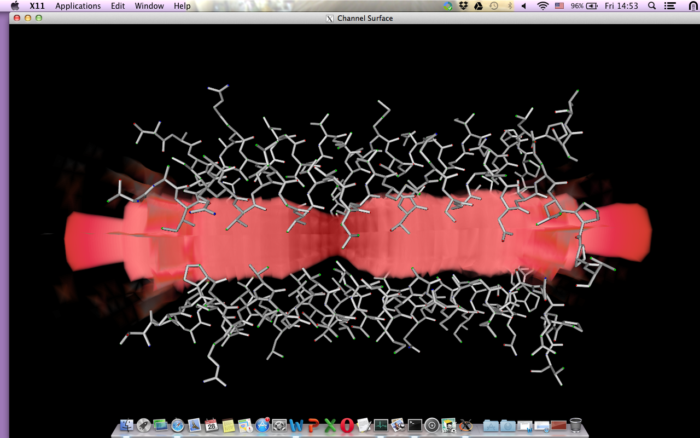

vtkPore Application
The purpose of this application is to create series of images to quickly visualise the pore radius with it’s surrounding residues.
- The current version reads only one pdb file, named TM2.pdb
- You’ll need python 2.7 and vtk to run the program.
